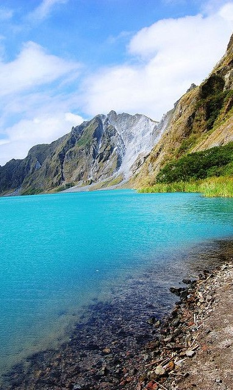

Region 3, also known as Central Luzon, is a region located in the central part of Luzon, the largest island in the Philippines. It is composed of seven provinces: Aurora, Bataan, Bulacan, Nueva Ecija, Pampanga, Tarlac, and Zambales. Central Luzon is known for its rich history, cultural heritage, agricultural productivity, and diverse landscapes.
Aurora is the easternmost province of Central Luzon and is known for its stunning coastline along the Pacific Ocean. It offers beautiful beaches, surfing spots, and pristine waterfalls. Aurora is also home to the Aurora Memorial National Park, which houses the birthplace and ancestral home of former Philippine President Manuel L. Quezon.
Bataan is a province known for its historical significance during World War II. It is home to the Bataan Death March Memorial Shrine and the Mount Samat National Shrine, which commemorate the bravery of Filipino and American soldiers during the war. Bataan also offers scenic landscapes, including Mt. Natib and several beach resorts along the coast.
Bulacan is a province rich in cultural heritage and historical sites. It is often referred to as the "Land of Heroes" due to its role in the country's fight for independence. The province features heritage towns such as Malolos, where the Malolos Constitution was drafted, and the Barasoain Church, a significant site in Philippine history. Bulacan is also known for its festivals, craftsmanship, and local delicacies.
Nueva Ecija is the largest province in Central Luzon and is known as the "Rice Granary of the Philippines" due to its vast agricultural fields. The province offers scenic landscapes with mountains, rivers, and waterfalls. Visitors can explore the Minalungao National Park, Pantabangan Dam, and the Philippine Rice Research Institute.
Pampanga is a province known for its culinary delights and vibrant cultural festivals. It is considered the culinary capital of the Philippines, offering a wide range of delectable dishes. Pampanga is also known for its historical churches, such as the San Guillermo Parish Church and the Betis Church. The province hosts the annual Giant Lantern Festival in San Fernando, where intricately designed lanterns illuminate the night sky.
Tarlac is a province known for its historical significance and natural attractions. It is home to the Aquino Center and Museum, dedicated to the legacy of the late Senator Benigno Aquino Jr. and former President Corazon Aquino. Tarlac offers outdoor activities such as hiking in Mount Pinatubo, exploring the Tarlac Recreational Park, and visiting the Monasterio de Tarlac, a mountain-top monastery.
Zambales is a province known for its pristine beaches, crystal-clear waters, and picturesque coves. It offers opportunities for beach activities, island hopping, and diving. Zambales is home to the Subic Bay Freeport Zone, a former US military base turned into a major tourist destination with theme parks, resorts, and a wildlife sanctuary.
Central Luzon's diverse landscapes, rich history, and vibrant culture make it a compelling destination for travelers. Whether it's exploring historical sites, indulging in culinary delights, enjoying coastal retreats, or immersing in nature's beauty, Central Luzon offers a range of experiences that captivate visitors from all walks of life.